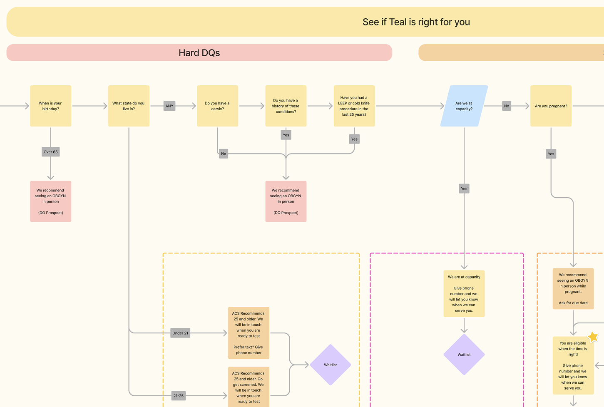
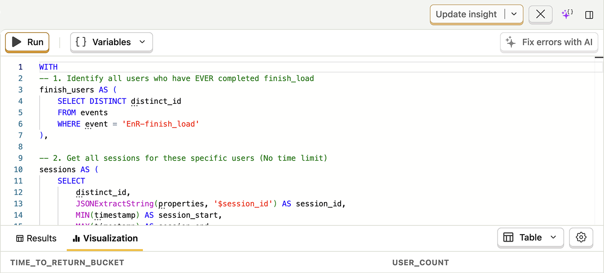
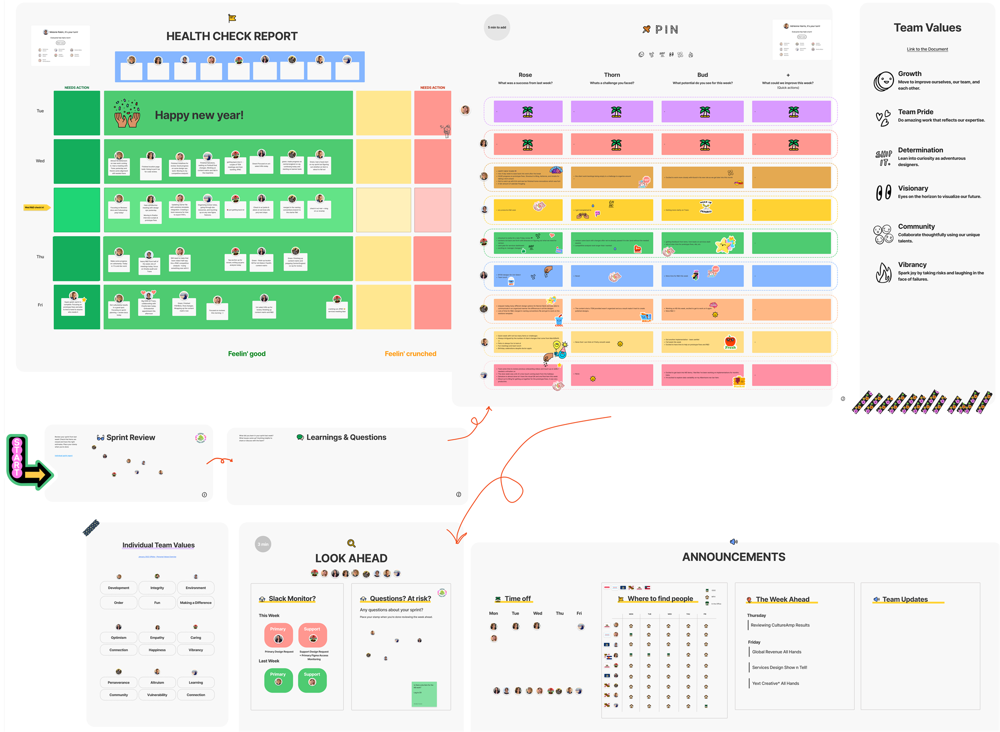
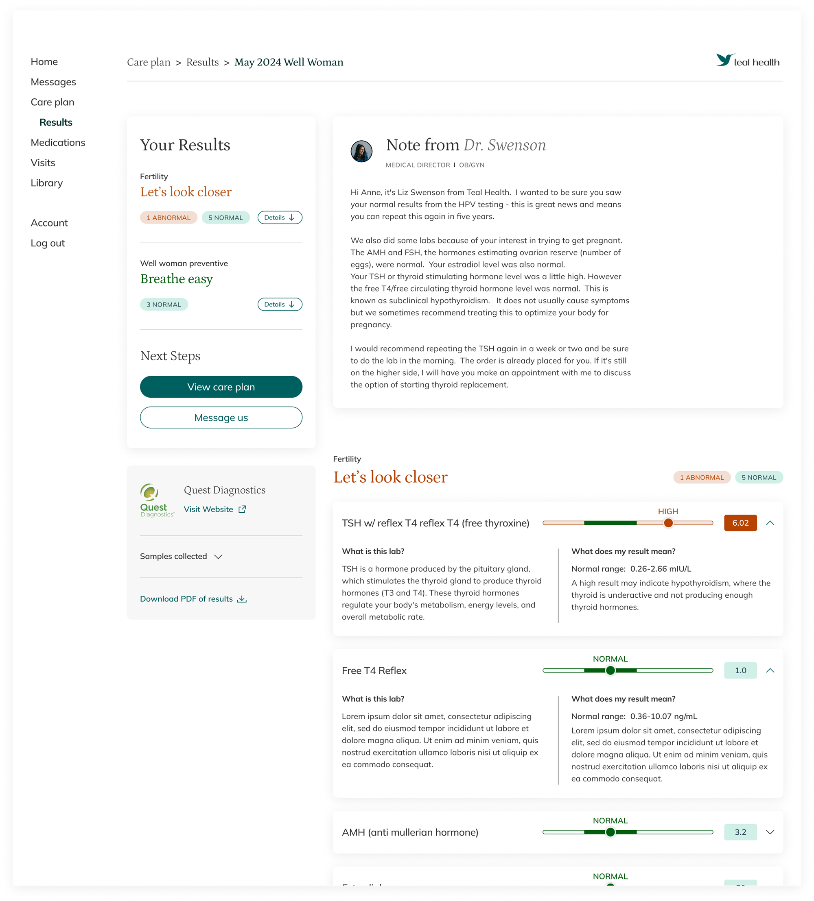
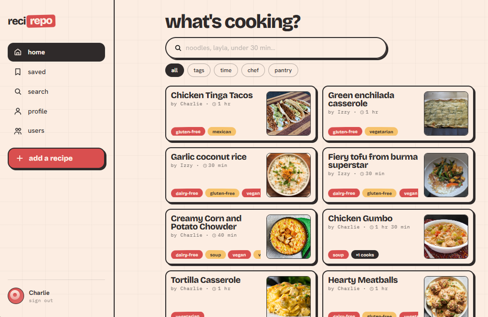

My name is Charlie
I'm a senior product designer and the only designer at Teal Health, where I took the first FDA-authorized at-home cervical cancer screening experience from pre-launch to nationally available. I own the product end-to-end, reaching past the usual design responsibilities, including the product analytics that drives our team's decisions and shipping code to production. Over the last year that work helped grow our core registration conversion rate by more than half. I'm looking for a product design role where craft, curiosity, systems thinking, and technical range can be let loose.
I do my best work sitting down with folks from different teams, building a shared understanding of the problem and goals, and finding the path forward that works for everyone. My value extends beyond the artifacts, reframing a messy problem clearly enough that a room of people with different priorities can agree on where to go next. I build the flows and the hi-fi designs for alignment and buy-in, then work shoulder-to-shoulder with engineers to make it real.

Product at Teal
Taking the first at-home cervical cancer screening experience from pre-launch to all 50 states, and growing conversion of a $99+ transaction flow by more than half along the way.

Growth agents
To address growth needs, I built a team of Claude agents: a shared knowledge base, a daily funnel watch, and a live dashboard the team relies on.

Leading a team
Growing and running an 8-person design team, and the onboarding system that sustained a culture of delivering quality as we scaled.

Lab results
An early exploration of how to make lab results more human.

Personal pursuits
Coding passion projects + creating fun experiences for my family.
I'm approaching a decade in design, coming from an engineering education. I started out learning fast on a delivery-focused consulting team, then grew to lead it. Now, I'm the sole designer at Teal Health, where I've helped bring the first at-home cervical cancer screening kit to women across the US. I geek out on process and wielding curiosity to arrive at seamless solutions to complex problem spaces. I love making things, digital and physical, exploring how they work and how they could work better. You'll find me playing games with friends, DIYing home renovations, or out in the Santa Cruz outdoors.